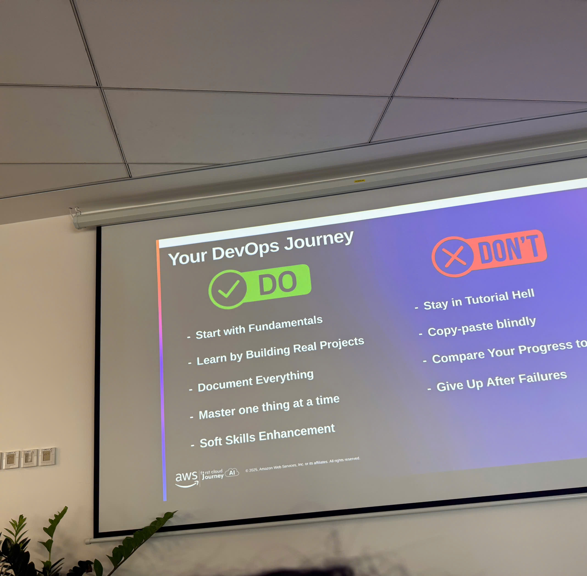
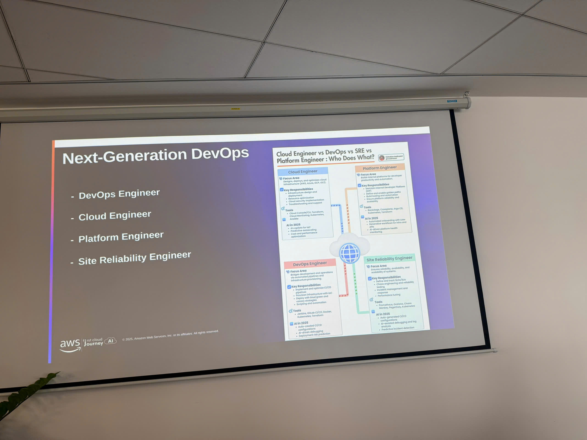

Event 2
⚠️ Note: The information below is for reference only. Please do not copy it verbatim into your official report, including this warning.
Summary Report: “DevOps on AWS Workshop”
- Date: Monday, November 17, 2025
- Time: 8:30 AM – 5:00 PM
- Location: AWS Office
Event Objectives
- Understand key DevOps principles, culture, and mindset
- Explore AWS DevOps services and build a complete CI/CD pipeline
- Learn Infrastructure as Code (IaC) with CloudFormation and AWS CDK
- Gain hands-on knowledge with AWS container services (ECR, ECS, EKS, App Runner)
- Apply monitoring & observability best practices using CloudWatch and X-Ray
- Study modern DevOps best practices, deployment strategies, and real-world case studies
Agenda & Key Contents
8:30 – 9:00 AM | Welcome & DevOps Mindset
- Recap of previous AI/ML session
- DevOps culture: collaboration, automation, continuous improvement
- Key DevOps metrics: DORA metrics, MTTR, deployment frequency
- Why DevOps increases agility, speed, and reliability
9:00 – 10:30 AM | AWS DevOps Services – CI/CD Pipeline
Source Control
- AWS CodeCommit overview
- Git strategies: GitFlow, Trunk-Based Development
Build & Test
- CodeBuild configuration
- Automated testing pipelines
Deployment
- CodeDeploy with Blue/Green, Canary, and Rolling deployments
Orchestration
- CodePipeline automation for end-to-end CI/CD
Live Demo
- Full CI/CD pipeline walkthrough on AWS
10:30 – 10:45 AM | Break
10:45 AM – 12:00 PM | Infrastructure as Code (IaC)
- Templates, stacks, and change sets
- Drift detection for configuration integrity
AWS CDK
- Constructs, reusable patterns, modular infrastructure
- Multi-language support: Python, TypeScript, Java, etc.
Live Demo
- Deploying infrastructure using both CloudFormation and CDK
Discussion
- When to choose CloudFormation vs CDK in real projects
12:00 – 1:00 PM | Lunch Break (Self-arranged)
Afternoon Session (1:00 – 5:00 PM)
1:00 – 2:30 PM | Container Services on AWS
Docker Fundamentals
- Microservices architecture
- Containerization workflow
Amazon ECR
- Image storage & scanning
- Lifecycle policies
Amazon ECS & EKS
- Deployment strategies
- Auto scaling and orchestration
- Differences between ECS vs EKS
AWS App Runner
- Simplified deployment of containerized applications
Demo & Case Study
- Comparing microservices deployment using ECS, EKS, and App Runner
2:30 – 2:45 PM | Break
2:45 – 4:00 PM | Monitoring & Observability
Amazon CloudWatch
- Metrics, dashboards, alarms
- Log Insights for troubleshooting
AWS X-Ray
- Distributed tracing
- Visualizing performance bottlenecks
Live Demo
- Setting up a full observability solution
Best Practices
- On-call readiness
- Alert routing
- Dashboard design for SRE/DevOps teams
4:00 – 4:45 PM | DevOps Best Practices & Case Studies
- Feature flags, A/B testing, progressive delivery
- Automated testing and CI/CD integration
- Incident management & postmortem culture
- Real-world DevOps transformations (startup vs enterprise)
4:45 – 5:00 PM | Q&A & Wrap-up
- DevOps career growth paths
- AWS certification roadmap (DevOps Engineer, SAA, SysOps, Solutions Architect Pro)
Key Takeaways
1. DevOps Mindset
- Collaboration between Dev + Ops reduces friction and speeds delivery
- DORA metrics provide a measurable framework for improvement
- Culture is as important as tooling
2. CI/CD with AWS
- CodePipeline + CodeBuild + CodeDeploy form a fully automated release pipeline
- Deployment strategies like Blue/Green and Canary reduce downtime and risk
3. Infrastructure as Code
- CDK accelerates development with reusable components
- CloudFormation ensures stable, consistent environments
4. Container Orchestration
- ECS offers simplicity, EKS offers flexibility and ecosystem integration
- App Runner is ideal for rapid, low-maintenance deployment
5. Observability
- CloudWatch and X-Ray help detect issues early
- Improving MTTR requires proper alerting and traceability
Event Experience
Attending the “DevOps on AWS” workshop provided practical, hands-on knowledge for building modern cloud-native systems.
Learning from AWS Experts
- Gained insights into scalable CI/CD pipelines and DevOps workflows
- Understood differences between container orchestration services and when to use each
Hands-on Exposure
- Built a complete CI/CD pipeline using the AWS DevOps toolchain
- Practiced deploying infrastructure using both CloudFormation and CDK
- Explored real microservices deployments on ECS, EKS, and App Runner
Skills Gained
- Designing IaC-based architectures
- Implementing observability best practices
- Applying DevOps principles to improve system reliability and automation
Networking Opportunities
- Connected with DevOps engineers, cloud architects, and AWS specialists
- Discussed real-world challenges such as scaling, incident response, and release strategies
Lessons Learned
- Automation minimizes human error and increases deployment frequency
- IaC is essential for consistency and repeatability
- DevOps success requires aligning culture, processes, and tools
Event Photos


Overall, the workshop enhanced my understanding of DevOps practices on AWS and provided a strong foundation for building automated, scalable, and reliable cloud systems.